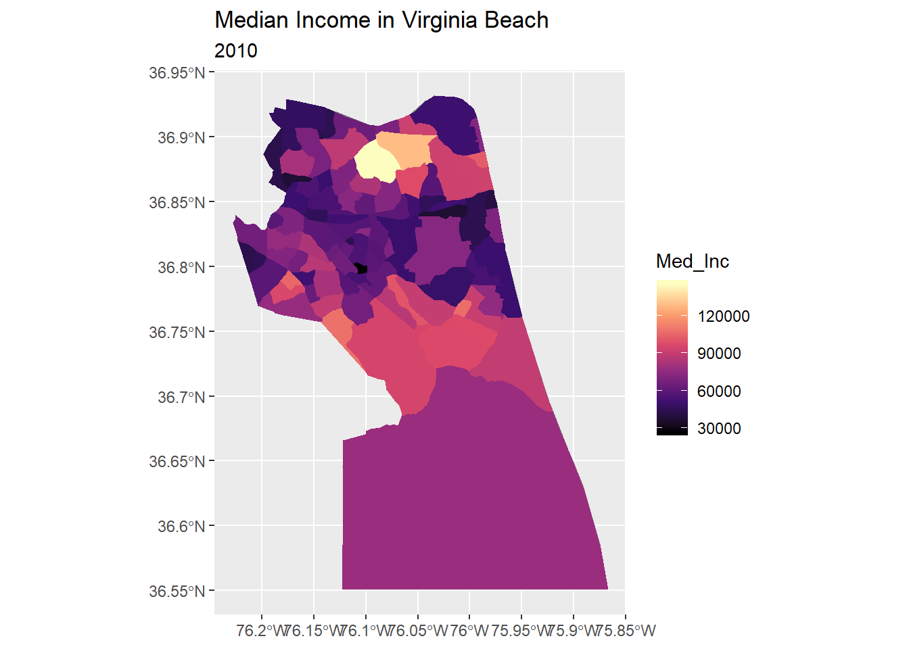
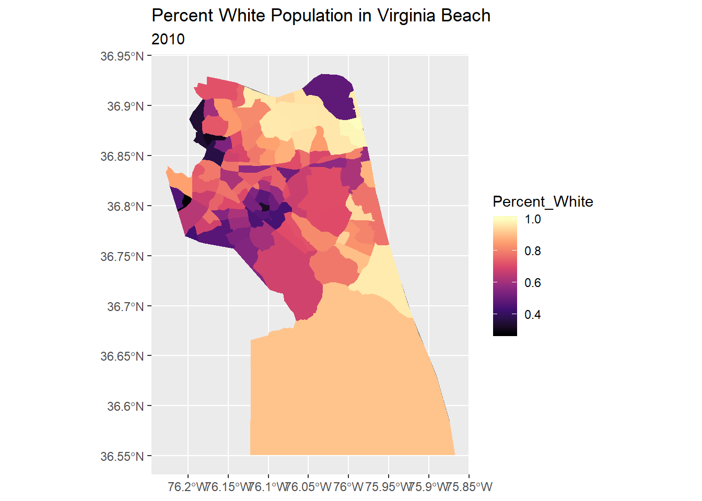
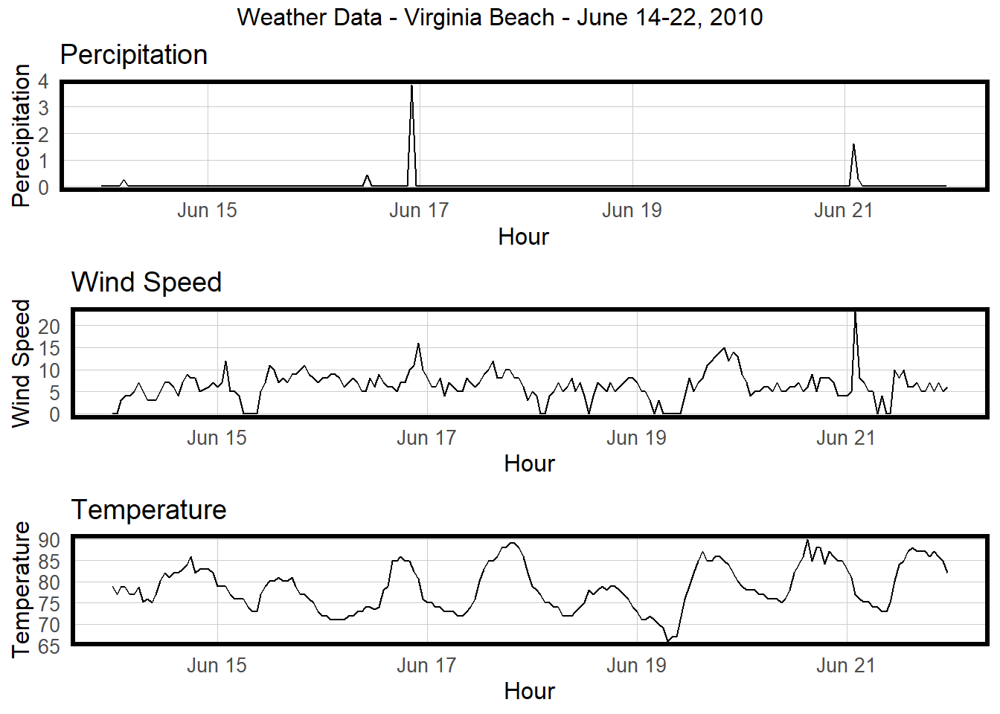
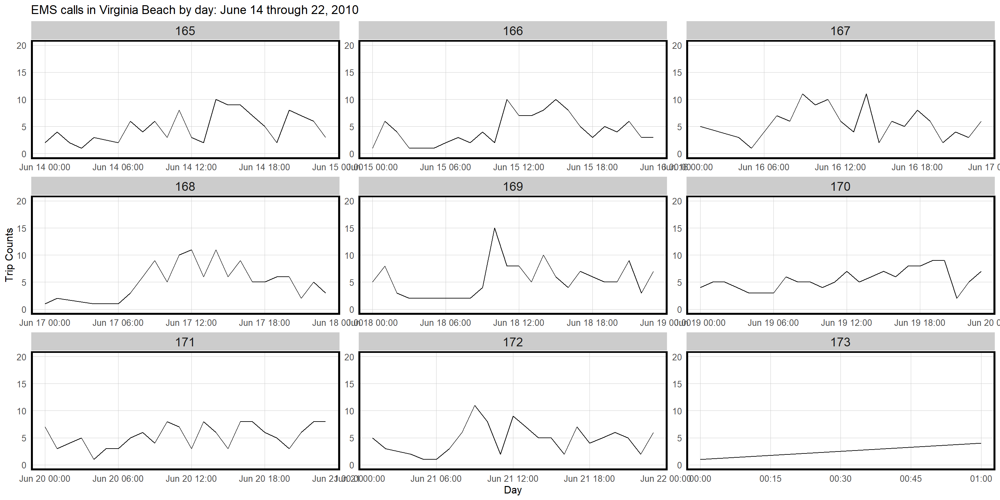
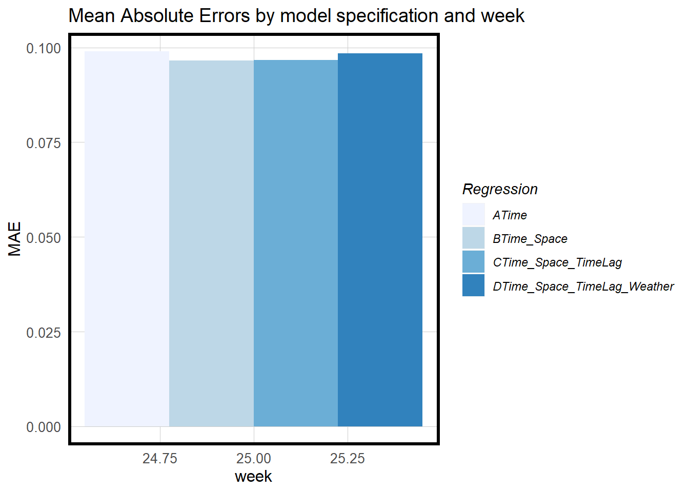
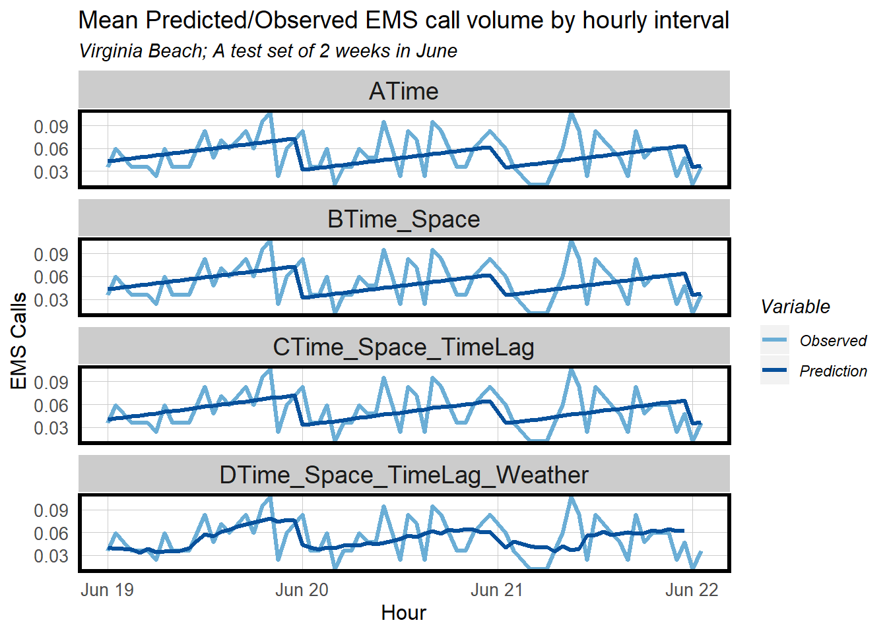

SmartAllocate – Predicting EMS Response for Smarter, More Efficient Ambulance Allocation
Sara Mattio and Kate Sutton
12/20/2019
Over the past 30 years, communication technologies have changed dramatically. As these technologies evolved, emergency response technology has lagged in modernization. The National Emergency Number Association (NENA) identified a need to completely overhaul the nation’s 911 systems in 2000; however, most municipalities have been slow to adapt this project. Unfortunately, out-of-date technology can result in slower emergency response – an inefficiency with potentially fatal outcomes.
Changes in business practices and adoption of new technology can be a challenging, lengthy process for small municipalities. While counties gradually improve emergency dispatch technology, it is possible to integrate intelligent, predictive algorithms into current business practices to optimize emergency response. This report analyzes the predictive modeling of SmartAllocate, an algorithm that increases efficiency in EMS response time by predicting the volume of EMS calls at any given time and day. By understanding where and when peak demand exists, ambulances are effectively allocated to the appropriate stations to handle predicted demand.
Incorporating intelligent predictive algorithms into emergency response has the potential to reduce fatal outcomes and reduce municipal spending. In this report, the process of building a predictive model for this use case will be analyzed with data provided by the City of Virginia Beach’s Open Data Portal.
Click here for the video presentation of this project.
1 The Data
The City of Virginia Beach has released an EMS Calls for Service dataset on their Open Data Portal which contains the date, time, location, and nature of the medical emergency for selected calls between 2010 and 2018. During the time this analysis took place, the City of Virginia Beach’s Open Data Portal underwent changes that resulted in the removal of the geocoded dataset used in this analysis. As a result, the only data made available to us was from June 14, 2010 to June 22, 2010. In total, the sample set contains 941 calls. Therefore, any tests and cross-validation conducted on the model could only utilize a small amount of data. Despite the limitations, this sample still serves as a useful cross-section of data as it takes place during Virginia Beach’s high season in the summer.
1.1 Reporting Bias in Emergency Calls
It should be noted that reporting bias likely exists in this dataset. With the exception of severe medical emergencies, it is likely that certain groups are more or less likely to call 911 for medical emergencies. Studies have found that those who have good health, good health insurance, no medical history, and no burden of medical costs are more likely to call 911 to report a medical emergency. Groups less likely to call 911 include those over the age of 65, of lower socioeconomic status, male, and in fair or poor health (Seo, M., Begley, C., Langabeer, J. R., & DelliFraine, J. L., 2014). According to 2017 ACS 5-Year Estimates, nearly 13% of Virginia Beach is over the age of 65 and 18.4% of the population earns less than $25,000 per year. An estimated 8.9% of the population does not have health insurance coverage. While this model may have utility in predicting emergency medical calls, these results are likely to be inconsistent to where medical emergencies are actually taking place due to underreporting.
2 Exploring The Data
First, calls were mapped out to understand which areas are receiving the most calls. As expected, many calls are located along arterial roads in northern Virginia Beach, indicating that traffic accidents may serve as a useful predictive indicator.

EMS Call Volume in Virginia Beach
This map shows the number of ambulances at each station, indicating that ambulances seem to be already well dispersed based on existing demand.

Dispatch Stations in Virginia Beach, Symbolized by Ambulance Count
A relationship may also exist between the number of calls and certain demographic indicators, such as age, income, and race. The map below shoes the median age for census tracts using 2010 Census data from tidycensus. As previously suggested, tracts that have higher median ages seem to make less calls, while lower median age census tracts have a higher call density.
…
Mapping median household income results in a slightly different outcome than expected. Lower EMS call volume seems to occur in census tracts wtih a highest median income, but tracts with an average household income of $60,000 to $90,000 seem to be located in high-volume areas.

Race data shows a possible relationship between mainly white census tracts and medical emergency calls.

Finally, given the relationship between weather and traffic accidents, weather conditions may also be a useful predictor for EMS call volume. Using the riem package, a weather panel can be created for the date range of the sample.
## interval60 Temperature Precipitation
## Min. :2010-06-14 00:00:00 Min. :66.02 Min. :0.00000
## 1st Qu.:2010-06-16 00:30:00 1st Qu.:73.94 1st Qu.:0.00000
## Median :2010-06-18 00:00:00 Median :78.08 Median :0.00000
## Mean :2010-06-17 23:53:24 Mean :78.63 Mean :0.03414
## 3rd Qu.:2010-06-19 23:30:00 3rd Qu.:82.94 3rd Qu.:0.00000
## Max. :2010-06-21 23:00:00 Max. :89.96 Max. :3.83000
## Wind_Speed
## Min. : 0.000
## 1st Qu.: 5.000
## Median : 6.000
## Mean : 6.351
## 3rd Qu.: 8.000
## Max. :23.000The data is then categorized by precipitation, wind speed, and temperature for the time period of this analysis. Weather patterns during this time, particularly high heat and precipitation may cause more health emergencies and traffic accidents, resulting in increased medical emergency calls.

3 The Model
It should be noted that because a limited sample set of data was provided to us by the City of Virginia Beach’s Open Data Portal, we were unable to train and test the model on a large sample size nor on a wider time period.
3.1 Space-Time Process
Because the data has both spatial and temporal features, the space-time process creates time-based features that are combined with spatial features to create a panel with every possible observation for space-time combinations. The EMS_calls dataset contains several temporal features, including dispatch time and entry date, but for this analysis, the call_date_and_time field was chosen. A 60-minute time interval was added to eventually create time lags. The resulting Call_Time panel is shown below.
study.panel <-
expand.grid(interval60 = unique(calls$interval60),
TRACTCE10 = unique(calls$TRACTCE10))
call.panel <-
calls %>%
mutate(Call_Counter = 1) %>%
right_join(study.panel) %>%
group_by(interval60, TRACTCE10) %>%
summarize(Call_Count = sum(Call_Counter, na.rm=T))
call.panel$interval60.3 <- parse_date_time(call.panel$interval60, orders = "mdy hm")
call.panel$week <- week(call.panel$interval60.3)
call.panel$dotw <- wday(call.panel$interval60.3)To incorporate the weather data to the panel, the time field is cleaned up with the is.POSIXct function and joined to the call.panel,
## [1] FALSE## [1] TRUEweather.Panel$interval60.3 <- parse_date_time(weather.Panel$interval60, orders = "ymd hms")
call.panel <- left_join(call.panel, weather.Panel, by = c("interval60.3", "interval60.3"))Next, to predict time series trends, time lags are incorporated into the model. Time lags provide additional insight into call volume during a given time period through the comparison of the hours before and after high-volume time periods. Because this sample set contains a holiday that may affect EMS call volume (Father’s Day), holiday features were incorporated into the model as fixed effects.
call.panel <-
call.panel %>%
arrange(TRACTCE10, interval60.3) %>%
mutate(lagHour = dplyr::lag(Call_Count,1),
lag2Hours = dplyr::lag(Call_Count,2),
lag3Hours = dplyr::lag(Call_Count,3),
lag4Hours = dplyr::lag(Call_Count,4),
lag12Hours = dplyr::lag(Call_Count,12),
lag1day = dplyr::lag(Call_Count,24),
holiday = as.factor(ifelse(yday(interval60.3) == 171,1,0))) %>%
mutate(day = yday(interval60.3)) %>%
mutate(holidayLag = case_when(
dplyr::lead(holiday, 1) == 1 ~ "MinusOneDay"),
holidayLag = replace_na(holidayLag, 0))
dplyr::select(st_set_geometry(call.panel, NULL),
interval60.3, TRACTCE10, Call_Count,
lagHour, lag2Hours)## # A tibble: 17,664 x 6
## # Groups: interval60.x [184]
## interval60.x interval60.3 TRACTCE10 Call_Count lagHour lag2Hours
## * <chr> <dttm> <fct> <dbl> <dbl> <dbl>
## 1 6/14/2010 0:00 2010-06-14 00:00:00 040000 0 NA NA
## 2 6/14/2010 1:00 2010-06-14 01:00:00 040000 0 NA NA
## 3 6/14/2010 2:00 2010-06-14 02:00:00 040000 0 NA NA
## 4 6/14/2010 3:00 2010-06-14 03:00:00 040000 0 NA NA
## 5 6/14/2010 4:00 2010-06-14 04:00:00 040000 0 NA NA
## 6 6/14/2010 6:00 2010-06-14 06:00:00 040000 0 NA NA
## 7 6/14/2010 7:00 2010-06-14 07:00:00 040000 0 NA NA
## 8 6/14/2010 8:00 2010-06-14 08:00:00 040000 1 NA NA
## 9 6/14/2010 9:00 2010-06-14 09:00:00 040000 0 NA NA
## 10 6/14/2010 10:00 2010-06-14 10:00:00 040000 0 NA NA
## # ... with 17,654 more rowsBy breaking down the number of calls by day, several patterns occur. During the weekday, fewer calls take place in the early morning, while volume seems to increase mid-day. On the weekends, volume appears to be lower and steadier. For the last day of the set, only a limited amount of calls were provided in the dataset, resulting in a perceived abnormal volume.

The plots below explore the relationship between EMS call counts and time lag functions. Based on the close correlation of these features in all time lag functions, these functions should serve as a strong predictor.
3.2 The Final Model
To train and test the model, call.Train and call.Test datasets were formed. Four regression models were developed using an increasing amount of indicators. The final two include time lag features.
call.panel$tract2 <- as.character(call.panel$TRACTCE10)
call.Train <- subset(call.panel, week == 24 & dotw < 7)
call.Test <- filter(call.panel, day > 169)
reg1 <-
lm(Call_Count ~ hour(interval60.3) + dotw , data=call.Train)
reg2 <-
lm(Call_Count ~ hour(interval60.3) + dotw + tract2, data = call.Train)
reg3 <-
lm(Call_Count ~ hour(interval60.3) + dotw + tract2 + lagHour +lag2Hours +
lag3Hours + lag4Hours + lag12Hours, data = call.Train)
reg4 <- lm(Call_Count ~ hour(interval60.3) + dotw + tract2 + lagHour +lag2Hours +
lag3Hours + lag4Hours + lag12Hours + Temperature + Precipitation + Wind_Speed, data = call.Train)3.3 Testing and Validating the Model
To test the model, a nested data frame of the test data by week. A functin is created (model_pred) that can be mapped onto each data frame of the nested structure.
call.Test.weekNest <-
call.Test %>%
filter(!is.na(lagHour))%>%
filter(!is.na(lag2Hours))%>%
filter(!is.na(lag3Hours))%>%
filter(!is.na(lag4Hours))%>%
filter(!is.na(lag12Hours))%>%
nest(-week)
model_pred <- function(dat, fit){
pred <- predict(fit, newdata = dat)
}The predictions can then be run and summarized as follows. The results show that 0.0531 calls take place per hour per census tract in Virginia Beach. This number seems lower than expected, which can be explained by the limited number of records in the dataset.
week_predictions <-
call.Test.weekNest %>%
mutate(ATime = map(.x = data, fit = reg1, .f = model_pred),
BTime_Space = map(.x = data, fit = reg2, .f = model_pred),
CTime_Space_TimeLag = map(.x = data, fit = reg3, .f = model_pred),
DTime_Space_TimeLag_Weather = map(.x = data, fit = reg4, .f = model_pred))
week_predictions <-
week_predictions %>%
gather(Regression, Prediction, -data, -week) %>%
mutate(Observed = map(data, pull, Call_Count),
Absolute_Error = map2(Observed, Prediction, ~ abs(.x - .y)),
MAE = map_dbl(Absolute_Error, mean, na.rm = TRUE),
sd_AE = map_dbl(Absolute_Error, sd, na.rm = TRUE))
week_predictions## # A tibble: 4 x 8
## week data Regression Prediction Observed Absolute_Error MAE sd_AE
## <dbl> <list> <chr> <list> <list> <list> <dbl> <dbl>
## 1 25 <tibble ~ ATime <dbl [6,0~ <dbl [6~ <dbl [6,048]> 0.0990 0.217
## 2 25 <tibble ~ BTime_Space <dbl [6,0~ <dbl [6~ <dbl [6,048]> 0.0966 0.214
## 3 25 <tibble ~ CTime_Space_T~ <dbl [6,0~ <dbl [6~ <dbl [6,048]> 0.0967 0.214
## 4 25 <tibble ~ DTime_Space_T~ <dbl [6,0~ <dbl [6~ <dbl [6,048]> 0.0984 0.214call.Test.weekNest %>%
mutate(Call_Count = map(data, pull, Call_Count),
Mean_Call_Count = map_dbl(Call_Count, mean))## # A tibble: 1 x 4
## week data Call_Count Mean_Call_Count
## <dbl> <list> <list> <dbl>
## 1 25 <tibble [6,048 x 20]> <dbl [6,048]> 0.0531To analyze the model further, the Mean Absolute Errors (MAE) for each model can be shown by week. It appears that the differences among the four models are minimal, although incorporating weather features improved the model slightly. Time lag features appears to have worsened the model slightly; however the difference is minimal.

Finally, the mean and predicteed observed volume of calls can be observed to compare goodness of fit. While Model D appears to be somewhat closely aligned, the other models do not match the predicted observations as closely as expected. The correlation plots for calls and time lag do not seems to be as strong of a predictor as originally suggested.

This analysis intended to include validation tests by space; however, the model produced too many NA values and results could not be mapped.
4 Conclusion
The idea behind this analysis was to explore data related to EMS call volume and utilize these features in a model which would ultimately be tested to determine accuracy and generalizability. While Model D was somewhat accurate in its predictions with an average MAE of 0.0984, compared to the average MAE of the tracts of 0.0531, the model’s MAE is not as strong. It is very surprising that models with time lag features did not show an improvement over those without time lag features, especially considering the correlation values for time lag features were above 0.90. Identifying the source of this problem would create the most substantial improvement in this model. As far as the generalizability of the model, the model is not accurate enough to assess its generalizability. Despite the initial shortcomings of the model at this stage, there is strong potential for improvement in further stages of development. First, a significantly larger sample size should be used. Without the API from the City’s Open Data Portal, it was challenging to properly assess a wide selection of data. Although geocoded data was provided to us by another group, the datetime formatting created a lot of issues and we chose to use the data we already had saved in our environment instead. Having at least 10,000 records would have allowed for a more thorough analysis. The time period used was also problematic. Unfortunately, the only data available to us was from a 9-day time period in June 2010. Creating a time-space model with 9 days worth of data was challenging and ultimately not useful in creating a generalizable model. In future stages of development of this model, using a larger, more recent dataset could create a more robust model.